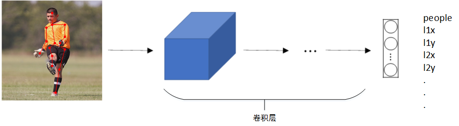
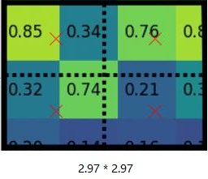

前言
最近看了几篇关于漏洞检测的文章，将图像处理领域中的目标检测的思想运用到软件的漏洞检测中。话是这么说，但是通篇看下来，其实和目标检测关系并不大，说到底还是对代码行进行分类，判断是否有漏洞。借着这个机会，正好总结一些深度学习课程中的目标检测。
概念
在学习目标检测之前首先来了解一下计算机视觉领域中的一些方向和概念，分别是图像分类、定位、语义分割、目标检测和实例分割。
图像分类
图像分类指用事先确定好的类别来描述图片，例如二分类判断一张图片中是否有猫或者多分类判断图片中手势表示的数字，前面实验中的任务就是图像分类。经典的网络模型就是 LeNet、AlexNet 和 VGG 等等。
分类 + 定位
定位任务不仅要识别出图像中的目标是什么，还要给出其在图像中的位置信息。通常用一个矩形框把识别的目标框出来（有时候也有多个固定数量的目标），而我们通常采用两种方式在图像中表示一个矩形框：
- (x1, y1, x2, y2)： 即给出矩形框左上角和右下角的坐标；
- (x, y, w, h)：即给出矩形框的中心坐标和矩形框的长宽。
目标检测
一幅图像中有多个目标而且目标的数量不固定，检测任务要尽可能多的将图像中的目标用矩形框定位出来，相当于对多个目标的定位。目标检测在计算机视觉领域中占据了核心地位，后面的实验也是围绕着目标检测展开。
语义分割
语义分割也叫语义场景标注，是对图像中所有像素进行分类，和目标检测任务不同的是同一个类别的不同实例不需要分割出来。例如图像中有多只猫，那么这些组成猫的像素就都分为同一类。
实例分割
实例分割要求更严格，相对于目标检测来说不再是用矩形框框出目标，相对于语义分割来说不再是对像素进行简单分类。而是要从像素层面上将目标和背景完全分离出来，分割的结果往往是找出目标的轮廓线。
目标定位
目标定位不仅关注特定目标的类别信息，还要求获得这一目标的位置信息。假设需要定位三类物体，网络最后则输出一个 8 维的向量，第一维表示图像中存在需要定位的目标的概率；第二到第五维表示目标的位置（中心和长宽）；最后三维则表示目标的类别。在训练的过程中，如果第一维为 0 则可以忽略其他维度，即损失函数与其他维度无关。可以对不同的维度使用不同的损失函数，例如对离散的分类结果使用交叉熵损失，对位置信息使用回归损失。
Landmark 定位
除了对目标进行分类和定位之外，我们还可以对目标的关键特征点（Landmark）进行定位，即已知固定数量的目标，给出每个目标的位置。例如人脸识别，可以对人脸的一部分特征点的坐标进行定位检测，并且标记出来，如下图所示：

该模型一共检测人脸 64 处特征点，加上是否是人脸的标志位，输出标签一共有 128+1 个值，通过检测人脸特征点可以进行情绪分类或者对脸部进行瘦脸美颜。除了人脸特征点检测之外，还可以检测人体姿势动作，如下图所示：

目标检测
目标检测的一种简单方法是滑动窗口算法，这种算法训练了一个 CNN 分类模型，只不过训练集的图像尺寸较小，尽量仅包含相应目标。模型训练完成后，在测试图片上选择大小适宜的窗口、合适的步长，进行从左到右、从上到下的滑动。每个窗口区域都输入之前训练好的模型进行识别判断。若判断有目标，则此窗口即为目标区域；若判断没有目标，则此窗口为非目标区域。不同大小的窗口如下图所示：

滑动窗口算法原理简单，但是滑动窗口的大小和步长都需要人为直观设定。滑动窗口过小或过大，步长过大均会降低目标检测正确率。而且每次滑动窗区域都要进行一次 CNN 网络计算，如果滑动窗口和步长较小，整个目标检测算法运行时间会很长。
滑动窗口的卷积实现
窗口在滑动动过程中，其框中的像素会输入到模型中进行卷积运算。由于窗口之间重复的内容比较多，因此会有大量的重复运算。而使用卷积的方式实现滑动窗口算法则可以提高网络的运行速度，节约重复运算成本。
单个滑动窗口区域进入 CNN 网络模型进行识别判断时，模型包含全连接层。如果滤波器的大小和输入的图像一致，那么卷积层的操作过程就相当于全连接层，因此我们可以将全连接层转变成为卷积层，如下图所示：

全连接层参数个数为

窗口的大小为
边界框预测
卷积方式实现的滑动窗口算法，使得在预测时计算的效率大大提高。但是其存在的问题是：不能输出最精准的边界框（Bounding Box）。如图所示，滑动窗口算法产生的滑窗（蓝色）不能完全涵盖目标，即不能输出精确的边界框。

交并比
交并比（Intersection over Union，简称 IoU）通过计算两个边界框的交集和并集的比来评价对象检测算法，也就是上图中红框和蓝框的交集和并集之比。在目标检测任务中，通常约定交并比大于等于 0.5 就说检测正确。如果两个框完全重合，那么交并比就为 1。
选择性搜索算法
如果暴力枚举各种各样的滑窗参数（大小和步长），那么也可以找到精确的边界框，但是这样时间开销比较大。那么应该如何优化呢？有人提出使用提议区域的方法（Region proposal method）创建目标检测的兴趣区域（Regions of Interest，简称 RoI），例如一张图像选 2000 个 RoI，这些区域之间可以互相重叠或者包含，然后再直接对这些区域进行识别判断。
选择性搜索（Selective Search，简称 SS）[2] 算法就是一种提议区域的方法，它的主要观点是图像中物体可能存在的区域应该是有某些相似性或者连续性区域的。首先，对输入图像进行分割算法产生许多小的子区域。其次，根据这些子区域之间相似性（相似性标准主要有颜色、纹理、大小等等）进行区域合并，不断的进行区域迭代合并。每次迭代过程中对这些合并的子区域做外切矩形，生成 RoI。
基于以上思路，人们提出了区域卷积神经网络（Region-based CNN 或 Regions with CNN features，简称 R-CNN）[3]。下面将简单介绍 R-CNN 和它的一系列改进方法：Fast R-CNN [4]、Faster R-CNN [5] 以及掩码 R-CNN（Mask R-CNN）[6]，效果更好的 YOLO(You Only Look Once) [7] 算法将结合着课程实验介绍和实现。
R-CNN
目标检测
- 对输入图像使用 SS 来选取大约 2000 个高质量的 RoI 。这些区域通常是在多个尺度下选取的，并具有不同的形状和大小，每个区域将被标注类别和真实边界框；
- 选取一个预训练的卷积神经网络，对模型进行微调使其分类数为
。将每个 RoI 裁剪缩放为网络需要的输入尺寸，并通过 CNN 前向传播计算和保存 RoI 的特征； - 将每个 RoI 的特征连同其标注的类别作为一个样本，训练
个 SVM 对目标分类。其中每个 SVM 用来判断样本是否属于某一个类别； - 将每个 RoI 的特征连同其标注的边界框作为一个样本，训练线性回归模型来预测真实边界框。
这个模型和我在自己论文中的思想有一定的相似性，都是单独训练几个模型：用于特征提取的模型和用于分类的模型。模型思路比较简单但是实现比较麻烦，这里值得注意的就是回归模型预测真实边界框，通过 SS 算法得到的边界框可能还不够精确。R-CNN 的主要性能瓶颈在于需要对每个 RoI 独立提取特征。由于这些区域通常有大量重叠，独立的特征提取会导致大量的重复计算。
Fast R-CNN
为了使 R-CNN 更快，Girshick 提出了 Fast R-CNN。一个主要改进在于只对整个图像做卷积神经网络的前向计算；其次三个独立模型合并为了一个联合训练框架并共享计算结果（end-to-end 的形式）。它的主要计算步骤如下：
- 与 R-CNN 相比，Fast R-CNN 用来提取特征的 CNN 的输入是整个图像，而且这个网络通常会参与训练，即更新模型参数；
- SS 在原图像上生成
个 RoI，这些形状各异的区域需要映射到 CNN 的输出上； - 将映射后的区域输入全连接层的时候需要固定的形状，与 R-CNN 裁剪缩放操作不同的是，Fast R-CNN 引入 RoI 池化层，将 CNN 输出的特征图和 SS 输出的 RoI 作为输入，提取 RoI 固定形状的特征；
- 通过全连接层将输出形状变换为
，其中 为隐藏层节点个数； - 类别预测时，将全连接层的输出的形状再变换为
并使用 softmax 回归（q 为类别个数）。边界框预测时，将全连接层的输出的形状再变换为 。也就是说，我们为每个 RoI 预测类别和边界框。
Fast R-CNN 中提出的 RoI 池化层对每个区域的输出形状是可以直接指定的，例如指定每个区域输出的高和宽为
Faster R-CNN
Fast R-CNN 存在的瓶颈是 SS，通常需要生成很多 RoI。Faster R-CNN 提出将 SS 替换成区域提议网络（Region Proposal Network，简称 RPN），通过训练的方式来获得只与检测目标类别有关的高质量区域，从而减少提议区域的生成数量，并保证目标检测的精度。
与 Fast R-CNN 相比，只有生成 RoI 的方法从 SS 变成了 RPN 而其他部分均保持不变。RPN 和最后的分类器的损失函数都是由两部分组成：分类的损失和边界框的回归损失。只不过 RPN 只需要进行二分类，即分析窗口中内容为目标还是背景，而不需要判断目标的类别。
文章使用了两种 CNN 来提取特征：Zeiler and Fergus（简称 ZF）网络和 Simonyan and Zisserman 网络（即 VGG-16）。前者输出的特征图为 256 通道，后者输出的特征图为 512 通道，以下内容均基于 VGG-16 网络作为卷积层。首先将输入 VGG-16 网络的图像缩放成
RPN
特征图中一共有
锚框
以每个像素为中心生成多个大小和宽高比（aspect ratio）不同的边界框，这些边界框被称为锚框（anchor box）。
如果多个待检测目标的中心在同一个区域内，我们首先根据数据集手工对原图上每一个区域生成各种各样形状和大小的锚框，保证锚框可以框住所有种类的目标。作者为每个区域手动指定了
一共有
提议区域
模型训练完毕后，我们就可以使用模型的前向传播部分对新的数据进行处理，步骤如下所示：
- 输入新的特征图，生成锚框，对所有的锚框进行边界框回归和分类；
- 对所有的锚框按照其为前景的分数进行排序，取前 6000 个；
- 对回归后的锚框进行处理，例如去除过长度或者宽度过小的锚框；
- 进行非极大值抑制，然后再次对所有的锚框按照其为前景的分数进行排序，取前 300 个作为提议区域输出。
非极大值抑制
在对锚框进行边界框回归后，对于同一个目标，可能有多个边界框与其对应，于是我们就要用到非极大值抑制，来抑制那些冗余的框，其过程如下所示：
- 将所有框的得分排序，选中最高分及其对应的框，例如上图中 0.9；
- 遍历其余的框，如果和当前最高分框的 IoU 大于一定阈值（通常取 0.5），我们就将框删除，例如上图中 0.6;
- 从未处理的框中继续选一个得分最高的，例如上图中 0.8，重复上述过程。
RPN 作为 Faster R-CNN 的一部分，是和整个模型一起训练得到的。即 Faster R-CNN 的目标函数既包括目标检测中的类别和边界框预测，也包括 RPN 中锚框的二元类别和边界框预测。最终 RPN 能够学习到如何生成高质量的RoI，从而在减少 RoI 数量的情况下也能保证目标检测的精度。
Mask R-CNN
如果训练数据还标注了每个目标在图像上的像素级位置，那么 Mask R-CNN 能有效利用这些详尽的标注信息进一步提升目标检测的精度，例如进行实例分割，在每一个像素上都表示出来目标所属的具体类别。
Mask R-CNN 在 Faster R-CNN 的基础上做了修改，引入一个全卷积网络。即增加了一个分支，用于输出一个二值掩膜，如下图所示，最后输出一个 80 通道的
RoIAlign
RoI 池化层有两个步骤会产生区域不匹配的问题，假设 CNN 下采样倍数为 32，原图中 RoI 的大小为

- 计算 RoI 在特征图中的边长，不取整，即边长为
； - 假设输入全连接网络的特征为
，每个 bin 的大小不取整，即边长为 ； - RoI 池化层得到的 bin 的边长是整数，然后输出整数。而 RoIAlign 需要对区域采样，例如采样点数为 4，用须线把 bin 平均分成 4 份，每一份取中心点位置的像素，即 x 处的像素值；
- 每个 x 处的像素值为其最邻近的四个值通过双线性插值得到。
双线性差值
数值分析这门课学得最熟的也就是插值法了，首先是线性插值，给定
总结
粗略学习了以下 R-CNN 以及一些列的改进，首先是 R-CNN 使用选择性搜索算法，先找出一些边界框再分别输入 CNN，避免了滑动窗口算法边界框不准确的问题；其次是 Fast R-CNN 将整张图片输入 CNN 提取特征后再把边界框映射过去，避免了 R-CNN 再分析边界框的过程中重复运算的问题；然后是 Faster R-CNN 直接在网络里面学习找出高质量的边界框，避免了 Fast R-CNN 中选择性搜索算法盲目找边界框；最后是 Mask R-CNN 改进了 RoI 池化层，避免了 Faster R-CNN 中区域不匹配的问题，同时添加了一个分支用于掩码预测每一个像素的分类，最后可以做到语义分割和实例分割。
以上图片来自于《动手学深度学习》，发现这是大神李沐写的，该花点时间好好提升一下自己的代码水平了。
参考文献
- 吴恩达. DeepLearning.
- Van de Sande K E A, Uijlings J R R, Gevers T, et al. Segmentation as selective search for object recognition[C]//Computer Vision (ICCV), 2011 IEEE International Conference on. IEEE, 2011: 1879-1886.
- R. Girshick, J. Donahue, T. Darrell, and J. Malik. Rich feature hierarchies for accurate object detection and semantic segmentation. In CVPR, 2014.
- Girshick, R. (2015). Fast r-cnn. arXiv preprint arXiv:1504.08083.
- Ren, S., He, K., Girshick, R., & Sun, J. (2015). Faster r-cnn: Towards real-time object detection with region proposal networks. In Advances in neural information processing systems (pp. 91-99).
- He, K., Gkioxari, G., Doll á r, P., & Girshick, R. (2017, October). Mask R-CNN. In Computer Vision (ICCV), 2017 IEEE International Conference on (pp. 2980-2988). IEEE.
- Redmon J, Divvala S, Girshick R, et al. You only look once: Unified, real-time object detection[C]//Proceedings of the IEEE conference on computer vision and pattern recognition. 2016: 779-788.
- J. Long, E. Shelhamer, and T. Darrell. Fully convolutional networks for semantic segmentation. In CVPR, 2015. 1, 3, 6
- 《动手学深度学习》. http://zh.diveintodeeplearning.org/index.html